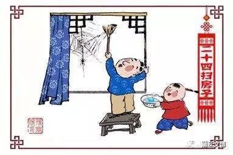
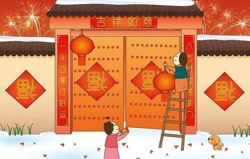
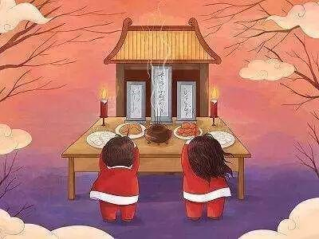
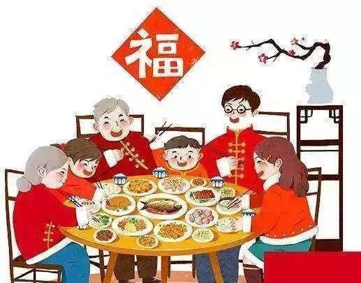
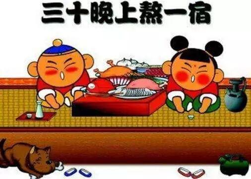
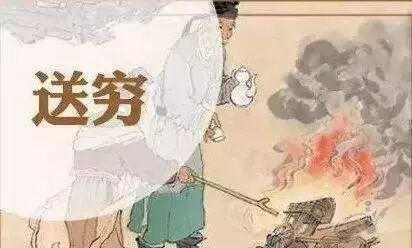
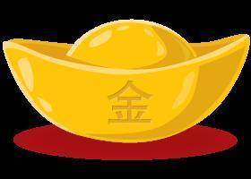

新春快乐，鼠年大吉！
一帆风顺吉星到
北风吹雪四更初，
嘉瑞天教及岁除。
半盏屠苏犹未举，
灯前小草写桃符。
万事如意福临门

除尘迎新
「 大年廿九 」

年前主要是以除旧布新为活动主题，扫尘是年节除旧布新习俗之一。民谚称“腊月二十四，掸尘扫房子”。
年尾廿三/廿四便正式地开始做迎接过年的准备。扫尘就是年终大扫除，北方称“扫房”，南方称“扫屋”。

贴年红
「 大年三十 」

贴年红，即是贴春联、门神、年画、窗花等的统称，因这些都是过年时贴的红色喜庆元素，所以统称为“贴年红”。
门神：最初的门神是刻桃木为人形，挂在人的旁边，后来是画成门神人像张贴于门。
春联：亦名“门对”、“对联”、“桃符”等，是对联的一种，因在春节时张贴，而得名。

除夕祭祖
「 大年三十 」

除夕祭祖是过年重要习俗之一，中华民族有慎终追远的传统，过节总不会忘记祭拜祖先，报祭祖先的恩德。
除夕，人们会摆上菜肴、倒上美酒，举行隆重的祭祀仪式，以此表达对先人的怀念并祈求祖先的庇佑，这一传统习俗代代相传。

年夜饭
「 大年三十 」

年夜饭，是年节习俗之一，又称年晚饭、团年饭、团圆饭等，特指年尾除夕的阖家聚餐。
吃团年饭前先拜神祭祖，待拜祭仪式完毕后才开饭。中国人的年夜饭是家人的团圆聚餐，这顿是年尾最丰盛、最重要的一顿晚餐。

守岁
「 大年三十 」

中国民间在除夕有守岁的习惯，吃罢团圆饭，灶具要洗得干干净净，以备正月初一早上或全天吃素。晚上要守岁，每个房间要整夜灯火通明，叫"点岁火"。
守岁的民俗主要表现为除夕夜灯火通宵不灭，守岁谓之“燃灯照岁”，即大年夜遍燃灯烛，据说如此照岁之后，就会使来年家中财富充实。

春节
「 正月初一 」
春节象征团结、兴旺，是一个对未来寄托新的希望的佳节。大年初一是岁之朝，月之朝，日之朝，所以又称“三朝”。这一天人们以守岁、拜年、贴画鸡、放鞭炮的方式表达着对新的一年美好的期望。在庆贺新年的同时也民间也一直流传着一些禁忌，比如正月初一不能动用扫帚，否则会扫走运气，把“扫帚星”引来，招致霉运。

破五
「 正月初五」

正月初五，又称破五。这一天人们一大早起床，放鞭炮、打扫卫生，扔掉前几天积攒的垃圾，意为“送穷”；民间一直将正月初五视为“财神生日”，为求利市，商家会选在这一日开市贸易；初一到初五禁忌较多，过了此日很多禁忌都可破除，所以人们会在初五吃饺子庆贺。
元宵节
「 正月十五」
元宵节，正月是农历的元月，古人称夜为“宵”，所以把一年中第一个月圆之夜正月十五称为元宵节。传统习俗出门赏月、燃灯放焰、喜猜灯谜、共吃元宵、拉兔子灯等。此外，不少地方元宵节还增加了耍龙灯、耍狮子、踩高跷、划旱船、扭秧歌、打太平鼓等传统民俗表演。

随着年龄的增长
可能我们再也找不到那种
新年买了新衣服的高兴感
也没了那种一块儿放炮的激动
更没了买很多东西的成就感
但是
还是会想念以前的种种
每个节日的存在都有着浓浓的意义
对每一个节日都认真对待
或许那种味道儿会回到我们身边


排版|辛学敏
文字|网 络
关 注 我 们 长按识别二维码即可关注   |